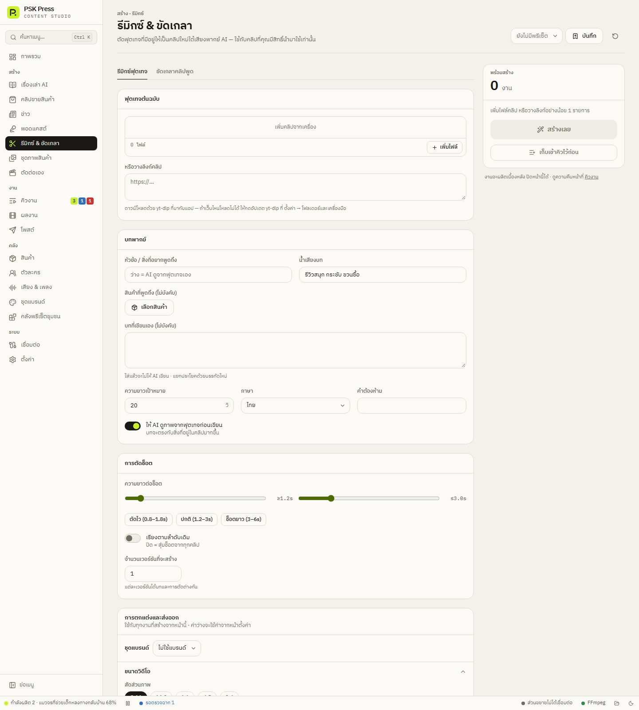

สร้างงาน
รีมิกซ์ & ขัดเกลา
สองเครื่องมือสำหรับฟุตเทจที่มีอยู่ — ตัดคลิปเดิมเป็นคลิปใหม่ใต้เสียงพากย์ AI หรือเก็บงานคลิปที่ถ่ายพูดเองให้พร้อมโพสต์
หน้านี้มี 2 แท็บ: รีมิกซ์ฟุตเทจ และ ขัดเกลาคลิปพูด แอปจำแท็บที่ใช้ล่าสุดไว้


รีมิกซ์ฟุตเทจ
ตัดฟุตเทจที่มีอยู่เป็นคลิปใหม่ใต้เสียงพากย์ AI ใช้กับคลิปที่คุณมีสิทธิ์นำมาใช้เท่านั้น
ฟุตเทจต้นฉบับ
- เพิ่มคลิปจากเครื่อง / เพิ่มไฟล์ — เลือกไฟล์วิดีโอหลายไฟล์ได้
- หรือวางลิงก์คลิป — แอปดาวน์โหลดด้วย yt-dlp ที่มากับแอป ถ้าดาวน์โหลดจากเว็บไหนไม่ได้ ให้อัปเดต yt-dlp ที่ ตั้งค่า → โฟลเดอร์และเครื่องมือ
บทพากย์
- หัวข้อ / สิ่งที่อยากพูดถึง — ว่าง = AI ดูจากฟุตเทจเอง
- น้ำเสียงบท (ค่าเริ่มต้น “รีวิวสนุก กระชับ ชวนซื้อ”)
- สินค้าที่พูดถึง (ไม่บังคับ)
- บทที่เขียนเอง (ไม่บังคับ) — ใส่แล้ว AI จะไม่เขียนบท แยกประโยคด้วยบรรทัดใหม่
- ความยาวเป้าหมาย 8–120 วินาที, ภาษา, คำต้องห้าม
- ให้ AI ดูภาพจากฟุตเทจก่อนเขียน — บทจะตรงกับสิ่งที่อยู่ในคลิปมากขึ้น (เปิดไว้เป็นค่าเริ่มต้น)
การตัดช็อต
- ความยาวต่อช็อต — ตั้งต่ำสุด/สูงสุด หรือกดปุ่มสำเร็จรูป ตัดไว (0.8–1.8s) ปกติ (1.2–3s) ช็อตยาว (3–6s)
- เรียงตามลำดับเดิม — ปิด = สุ่มช็อตจากทุกคลิป
- จำนวนเวอร์ชันที่จะสร้าง 1–20 — แต่ละเวอร์ชันได้บทและการตัดต่างกัน
ขัดเกลาคลิปพูด
เก็บงานคลิปที่ถ่ายพูดเอง ตัดช่วงเงียบ ถอดเสียงเป็นซับเคลื่อนไหว ใส่ฮุค พาดหัว เพลง และลายน้ำ ไฟล์ละ 1 งาน เสียงพูดในคลิปเป็นของเดิม
การถอดเสียงใช้ OpenAI Whisper ต้องใส่คีย์ OpenAI ที่ ตั้งค่า → คีย์ API ก่อน
- คลิปของคุณ → เพิ่มคลิปพูด (ไฟล์ละ 1 งาน)
- ตัดช่วงเงียบ — ไม่ตัด / ปกติ (เงียบ > 0.9 วิ) / กระชับ (เงียบ > 0.45 วิ)
- ภาษาในคลิป
- เลื่อนเวลาซับ −2 ถึง +1 วินาที — ถ้าซับขึ้นก่อนหรือหลังเสียง
- ให้ AI ตรวจคำผิดในซับ — แก้คำที่ถอดเสียงผิด โดยไม่เปลี่ยนจังหวะซับ
- หัวข้อคลิป — ช่วยให้สะกดชื่อเฉพาะ เช่น ชื่อแบรนด์ ได้ถูก
แท็บนี้เปิดซับไตเติลไว้เป็นค่าเริ่มต้น ไม่มีฮุคและเพลง ปรับได้ใน การตกแต่ง (ไม่มีส่วนเสียงพากย์ เพราะใช้เสียงเดิม)